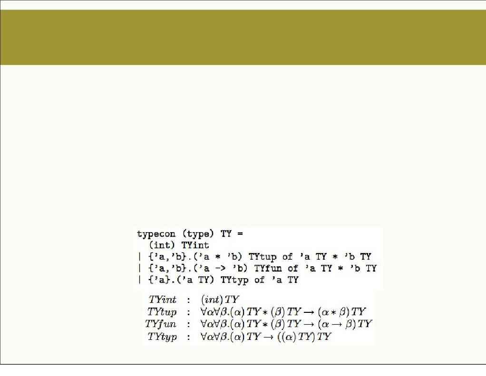
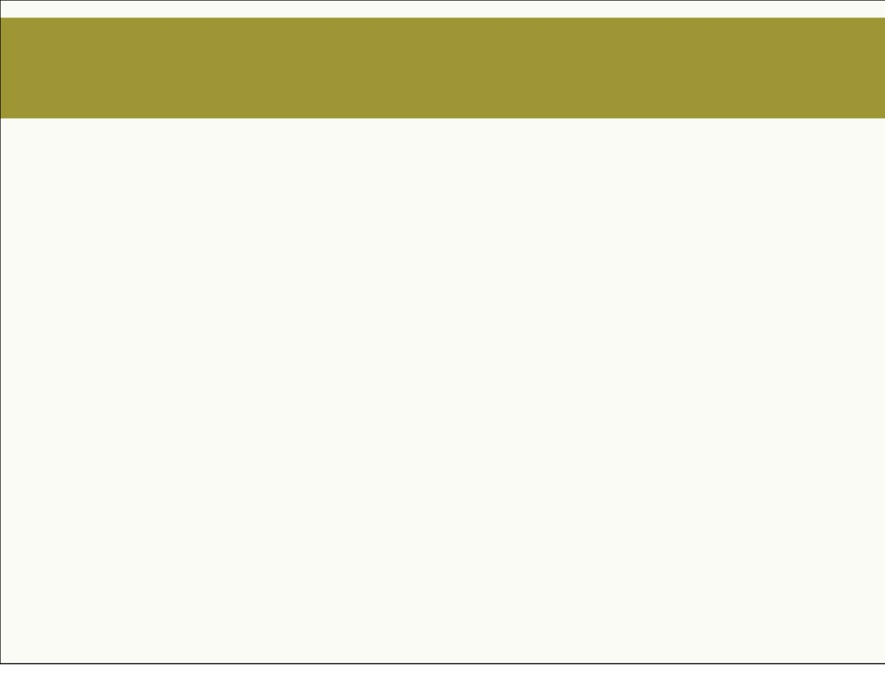

GADTs
• Generalized Algebraic Data Types (GADTs) generalize
algebraic datatypes of ML/Haskell by letting constructors
construct values of different types, but same top-level type
constructor.
• Formally introduced into functional programming (Standard
ML!) as Guarded Recursive Datatype Constructors
(GRDTs) [Xi et al., POPL’03]
2
Monday, December 9, 13
List and Even-Odd Examples
• Traditional list ADT
• List GADT that can distinguish between empty and non-
•
Length-indexed list GADT in [ocaml]
• Length-indexed list GADT using type-level functions, and
•
Nat datatype indexed by Parity (Even/Odd) in [Ocaml]
•
Parity indexed Nat with type functions in [Haskell].
We get free theorems!
3
Monday, December 9, 13
Printf/Scanf
•
With traditional format descriptor [ocaml]
• Naive translation to GADT-based descriptor that turns out
• A
sensible format GADT, that lets us write sprintf with type
sprintf : s fmt → s → string. [ocaml]
• A better format GADT, with
sprintf : s fmt → s [ocaml]
4
Monday, December 9, 13

Higher-Order Abstract Syntax
• Consider traditional AST formulation of a toy language similar to
• Scope-respecting & capture-avoiding alpha renaming is tricky.
• side-conditions (helper functions) are needed to ensure that
substitution is syntactically correct.
• Higher-order abstract syntax is higher-order generalization of
abstract syntax trees, which are first-order. The “higher-order”
property manifests as higher-order constructors of abstract
syntax agains first-order
constructors of AST. [ocaml]
• The basic idea is to use meta language's abstraction facilities to
represent the object language's binding constructs, so that we get
"syntactically legal"
substitutions in
object language for free.
5
Monday, December 9, 13